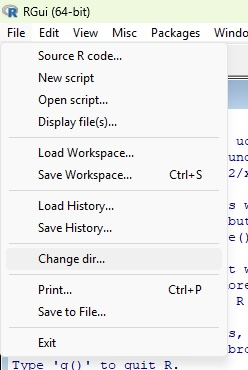
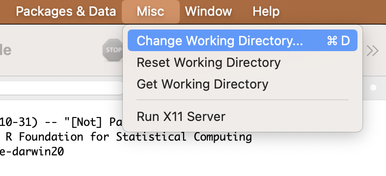
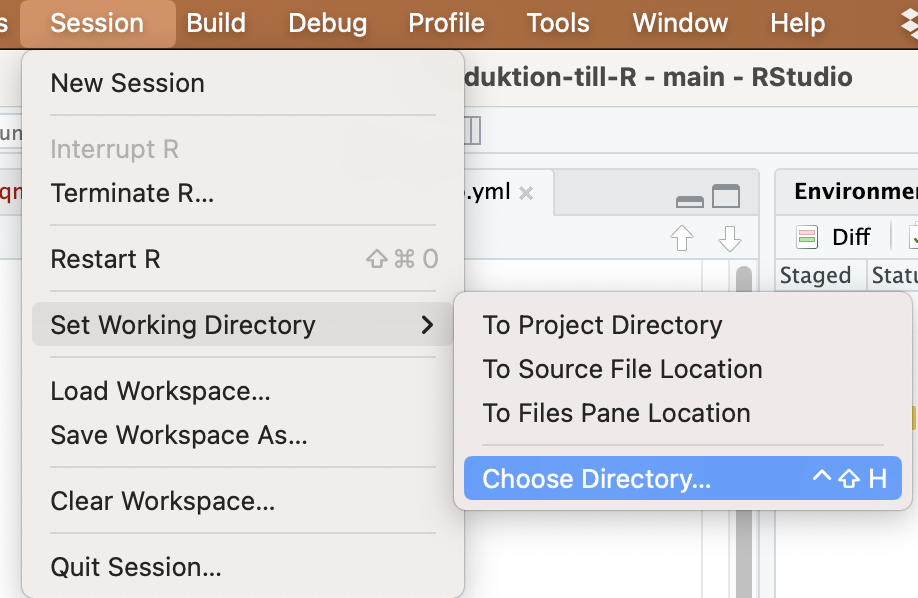
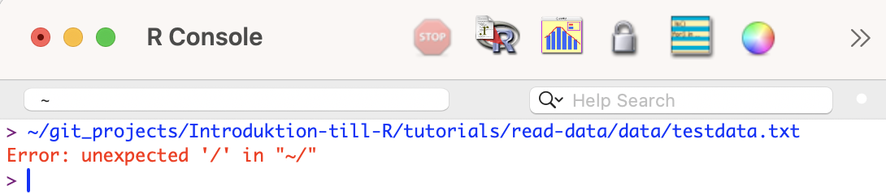
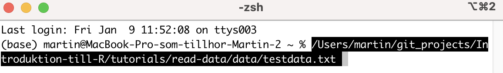

getwd()[1] "/Users/martin.lind/git_projects/Introduktion-till-R/tutorials/read-data_eng"The first step, before doing a statistical analysis, is always to read the data into R.
We will go through the following:
How to read data files into R
An overview of common file types that R can read, described in the section on Data formats
There are many ways to read in a file — it partly depends on whether you use R or RStudio, but also on whether you want to document the file’s name and location (recommended for reproducibility). Finally, the choice may depend on whether you are using an R project or not.
Below we will go through the following methods:
| Method | Description |
|---|---|
| Relative path to the file | You first specify which folder your file is in (your Working Directory) and then the file’s name |
| Absolute path to the file | You specify exactly where the file is located on your hard drive and its name |
Which method you use is a matter of taste — both methods are common, and you should be familiar with both.
A relative path means that you first specify which folder the file is in, and then the file’s name.
Download the following file testdata_v2.txt (right-click, choose “Save link as”) and save the file on your hard drive in a folder with a suitable name.
The next step is to tell R where on your hard drive you have saved the file, i.e. what the path is to the folder the file is in. Then you can tell R which file in that folder to read.
The location you are currently in is your Working Directory, and you can decide for yourself what your Working Directory is. You probably have all the files belonging to a certain project in one folder on your hard drive, so it would make sense to set that folder as your Working Directory.
You can see where your Working Directory currently is with the function getwd()
Try checking where your Working Directory is
A simple way to change your Working Directory is to use the menus.
Use the menus to select the folder where you saved the file testdata_v2.txt as your new Working Directory!
In R you can choose the Working Directory by clicking File -> Change dir… in the menus (if you are using Windows). If the menu option doesn’t appear, you may first need to click somewhere in your Console and then try again.

If you’re using Mac (OSX) it looks like this:

RStudio has a corresponding menu option:

Now you have set your Working Directory so that it is the folder containing the files you want to work with!
However, it’s good practice to document your Working Directory in your script, so you don’t need to set it manually in the menus the next time you work with the same data. It also helps you remember where the files are located.
After you have set the correct Working Directory in the menus, do the following:
getwd(). Select and copy the path.setwd()setwd("/Users/martin/git_projects/Introduktion-till-R")
The next time you open R and your script, it’s enough to run the line with setwd() where you’ve just filled in the path to your Working Directory, and you’ll land directly in your folder and be able to read in your files!
Now your Working Directory is the same folder that the file testdata.txt is in.
We will read in the file with the function read.table().
<- means that we save the result of the function (here read.table()) in an object. Since it’s our data, the object is a dataframe. The arrow <- points to the object, and we give it a suitable name, in this case testdata.
read.table() is the function for reading in text files with the .txt file extension
"testdata_v2.txt" is the path to the data file, and since it’s located directly in your Working Directory, we only need to write out the name of the file (testdata_v2.txt).
header=T means that the first row of the data file is a header row and not made up of data. This is almost always the case when reading a data file into R. If the first row also consists of data (i.e. there are no headers), you replace T with F (T stands for TRUE, F stands for FALSE).
sep="\t" means that all values/cells are separated by TAB (it is a tab-separated text file).
dec="," means that a comma is used as the decimal separator (e.g. 1,32). If the file instead uses a period as the decimal separator (e.g. 1.32), you instead specify dec="."
The next step is to inspect your dataset, to check that everything went correctly when reading it in.
Start by inspecting the structure of the dataset with str().
'data.frame': 10 obs. of 3 variables:
$ Colour: chr "Green" "Green" "Green" "Green" ...
$ Weight: int 4 3 5 4 5 12 14 15 11 14
$ Length: num 1.3 1.1 3.4 2.5 7.1 14.5 16.9 13.5 9.4 11$ Colour: chr means that the values in the Colour column are characters
$ Weight: int means that the values in the column Weight are integers
$ Length: num means that the values in the column Length are decimal numbers (numeric)
If you have a column that should contain decimal numbers, it should say num. If instead it says chr, it means the data file has a period as the decimal separator, but you assumed it was a comma (or vice versa), and R therefore thinks it’s text. Change the separator, e.g. from dec="," to dec="." in the code and import the dataset again.
Then show the first rows of your dataset with the function head() and verify that everything looks correct.
Colour Weight Length
1 Green 4 1.3
2 Green 3 1.1
3 Green 5 3.4
4 Green 4 2.5
5 Green 5 7.1
6 Blue 12 14.5If everything looks correct, you’re ready to analyze your data!
An alternative is to specify the absolute path to the file, i.e. exactly where it is located on your hard drive. This is a good method to use so you always know which file you’re working with, and it’s advantageous if you work with files spread across different folders on your computer. It’s unwise to change your Working Directory during an ongoing analysis, and it’s also unwise to have more than one copy of the same file on your hard drive. To avoid that, you can use absolute paths.
Advantage
Disadvantage
Download the file testdata.txt (right-click, choose “Save link as”) and save the file on your hard drive in a different folder than where you saved the file in the previous example.
The next step is to tell R where on your hard drive you have saved the file (the absolute path to the file).
file.choose()The simplest way is to use the function file.choose(). Type in that function without filling in anything inside the parentheses. A dialog box will then appear where you locate your file and select it. R will then give you the absolute path to the file — in my case it was:
[“data/testdata.txt”]
Select and copy the path — we’ll use it when we read the file into R
We will again read in the file with the function read.table(), and we’ll call our loaded dataset testdata_absolut.
Note that we now have a longer path to the file.
"data/testdata.txt" is the path to the data file, i.e. where it is saved on your hard drive (data/), together with the name of the file (testdata.txt). You replace this text with the path to your file that you copied in the step above.
See Read in the file in R for our earlier description of how to interpret the different parts of the function read.table(). After reading in the file, you should always Inspect your data before starting your analyses.
'data.frame': 10 obs. of 3 variables:
$ Colour: chr "Green" "Green" "Green" "Green" ...
$ Weight: int 4 3 5 4 5 12 14 15 11 14
$ Length: num 1.3 1.1 3.4 2.5 7.1 14.5 16.9 13.5 9.4 11 Colour Weight Length
1 Green 4 1.3
2 Green 3 1.1
3 Green 5 3.4
4 Green 4 2.5
5 Green 5 7.1
6 Blue 12 14.5If you already have the file open in your file manager (Finder, Explorer or similar), an alternative way to find out the absolute path is to drag the file and drop it into the R console. You will then see its path, shown in blue on a Mac (as well as possibly some error messages, since you’re doing something R doesn’t understand — but R gives you the path, which is what we want).

The path to the file on my computer is: ~/git_projects/Introduktion-till-R/tutorials/read-data/data/testdata.txt
RStudio - if you’re using RStudio, dragging the file into the console doesn’t work. Instead you can open your terminal (Terminal, iTerm, EMAC, MobaXterm etc.) and drop the file there. Or do it in plain R. Then you’ll get a path.

R can handle a large number of data formats — some of them are read automatically, others require you to download and install specialized packages.
File extension
|
DescriptionTab-delimited text |
Function
|
Extra package required | Comments | ===================+==================================================================================================+ - | | | ||
csv |
Comma/semicolon-delimited text | read.csv() |
- | Specify whether the delimiter is “,” or “;” | | |
xlsx |
Excel document | read.xlsx() |
openxlsx |
See the package’s documentation | |
rda rdata |
R data file | load() |
|||
sas7bdat sas7bcat dta sav |
SAS Stata SPSS |
read_sas()read_dta()read_sav() |
haven |
See the package’s documentation | | | |
We have already tried reading in a tab-delimited text file (a .txt file) in the Read in the file section above. Now we’ll try a few other file types.
A csv file is a file where the values are separated by commas or semicolons. It’s a very common file type for long-term data storage.
Download the file testdata_csv.csv and save it somewhere on your hard drive.
After that, locate the file, either by using Relative path to the file or Absolute path to the file. If you saved it in the same folder as your Working Directory, it’s easy to use a relative path.
We will again read in the file with the function read.csv(). Fill in the correct path to your file
We save the result from the function read.csv(), which is a dataset, under the name testdata_csv. You should always use different names for different datasets.
sep=";" means that the values in the file are separated by semicolons. Otherwise the function works like read.table(), described in detail above (Read in the file). After reading in the file, you should always Inspect your data before starting your analyses.
'data.frame': 10 obs. of 3 variables:
$ Colour: chr "Red" "Red" "Red" "Red" ...
$ Weight: int 7 4 3 4 5 12 14 15 11 14
$ Length: num 2.3 4.1 3.4 2.5 7.1 14.5 16.9 13.5 9.4 11 Colour Weight Length
1 Red 7 2.3
2 Red 4 4.1
3 Red 3 3.4
4 Red 4 2.5
5 Red 5 7.1
6 White 12 14.5Most people who collect biological data enter their values in Excel, and then export their data as a txt or csv file. It can therefore be tempting to read the Excel sheet directly into R, without taking the detour of exporting to another format.
Advantages of reading Excel files directly
Disadvantages of reading Excel files directly
Excel has a proprietary format; it’s not guaranteed that your files can be read in the future, so it’s better to save your data in an open format such as txt or csv
It’s good practice to separate your Excel files (where ongoing data collection is entered) from your finished data (your txt or csv file), which should not be manipulated
The Excel sheet you read in must be completely clean, i.e. you must not have any cells with information other than data (for example, no charts, blank columns, or similar).
Download the file testdata_excel.xlsx and save it somewhere on your hard drive.
After that, locate the file, either by using Relative path to the file or Absolute path to the file. If you saved it in the same folder as your Working Directory, it’s easy to use a relative path.
To be able to read in an Excel file we need to install the package openxlsx. See the earlier information in the chapter on installing packages for a full walkthrough of how to manage packages.
You install the package with the code install.packages("openxlsx")
Once the package is installed, we need to load it into our current R session
Now the package is loaded and we can use the function read.xlsx() to read in our Excel file.
sheet=1 means you read in the first sheet of the Excel document.
After reading in the file, you should always Inspect your data before starting your analyses.
'data.frame': 10 obs. of 3 variables:
$ Colour: chr "Purple" "Purple" "Purple" "Purple" ...
$ Mass : num 2 5 3 5 5 12 14 15 11 14
$ Width : num 12.3 14.1 12.4 12.5 17.1 20.5 26.9 23.5 19.4 21 Colour Mass Width
1 Purple 2 12.3
2 Purple 5 14.1
3 Purple 3 12.4
4 Purple 5 12.5
5 Purple 5 17.1
6 Yellow 12 20.5